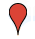
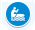

Légende
Points d'intérets,départ/fin de parcours
Pont

Propulsée par Google MyMaps, cette carte interactive identifie des débarcadères, des parcours et quelques points d'intérets comme des rapides.
Lorsque vous cliquez sur un symbole, vous pourrez obtenir de l'information supplémentaire par exemple une photo d'un débarcadère.
Ceci aide parfois a planifié vos randonnées.
Exemple d'interaction


Le recueil de données
Comme il y a tellement de plan d'eau dans la région, le problème n'est pas d'en trouver bien entendu!
C'est plutôt une question d'accessibilité comme de connaitre un endroit ou pouvoir sortir ou d'y accèder et de pouvoir stationner notre véhicule.
Muni de mon GPS, j'ai répertorié quelques parcours pour bâtir cette carte. Les parcours ont été identifiés par des couleurs non pas pour leur niveau de difficultés mais bel et bien pour les différenciers.
Découvrir la région à 5 km/h
Je me fais autant plaisir a parcourir un plan d'eau que de prendre des photos et des relevés GPS. Trouver une petite chute ou un ruisseau, voir un grand héron se dégourdir ou bien fermer les yeux en écoutant le chant d'un huard, pour moi, c'est le bonheur. Découvrir un plan d'eau et l'explorer, c'est mon type d'aventure. Bonne rando! N'hésiter pas a soumettre des parcours que vous avez fait afin de complèter au mieux notre carte avec vos expérienes et photos.
Quelques parcours
Compatible Garmin, voici quelques parcours que vous pouvez téléchargerVisionner le parcours à l'aide de l'application Revive